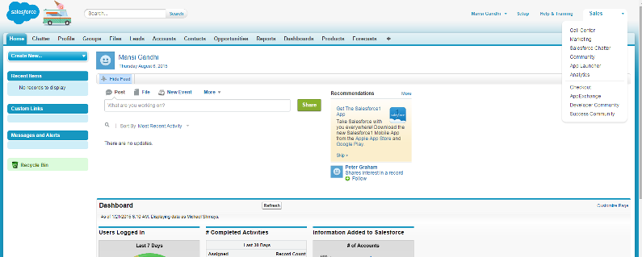
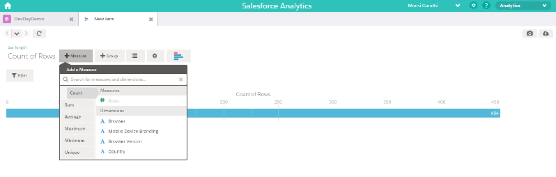
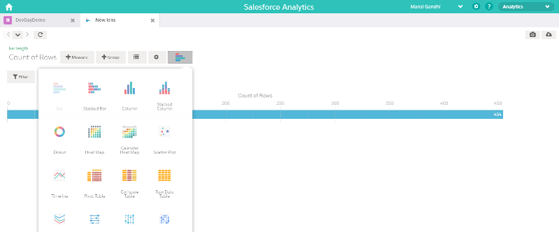
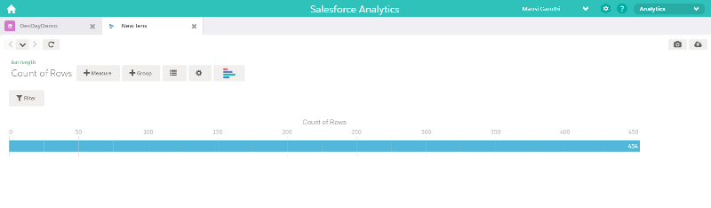

Walkthrough
Login : Log into the web application; enter all your personal credentials

Manage profile tab : Once you login, lets skip the dashboard and jump into setting, The first section in settings is your profile

Manage users : Add, edit, remove and view users who have access to the application

Add user: Fill in credentials of the new user and assign role

Manage Google Analytics Profiles : Add, edit, remove and view your current profiles

Add a new website : Fill in credentials of the new site details and press connect under "actions" once added to activate the profile.

Manage Salesforce Analytics Profiles : Add, edit, remove and view your current profiles

Add a new website : Fill in credentials of your chosen SA profile

Select "Dashboard" from top menu : View all jobs currently active, inactive or pending

Select "add job" : And create a new job with your required metrics and dimensions through a drop-down list

Log into your Salesforce account : From top right hand drop-down, select "Analytics"

Select your data set : from the personas from the application

Select your reporting needs : From measures, groups and charting options

Edit your report : to suit your business reporting needs
